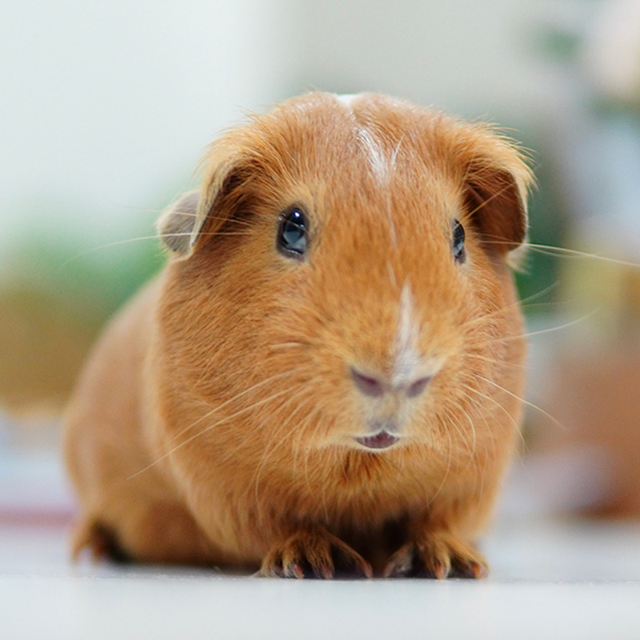
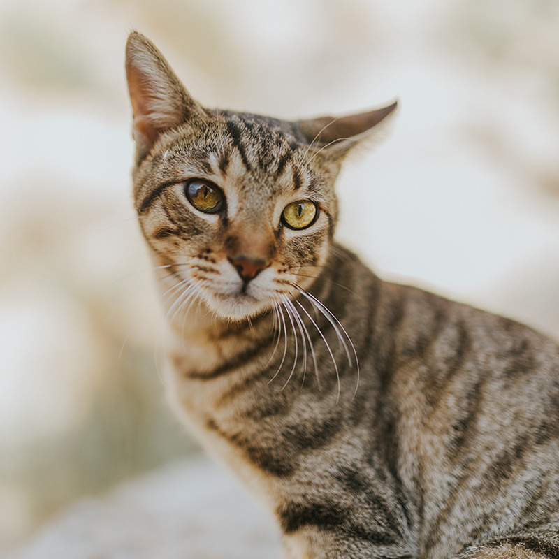
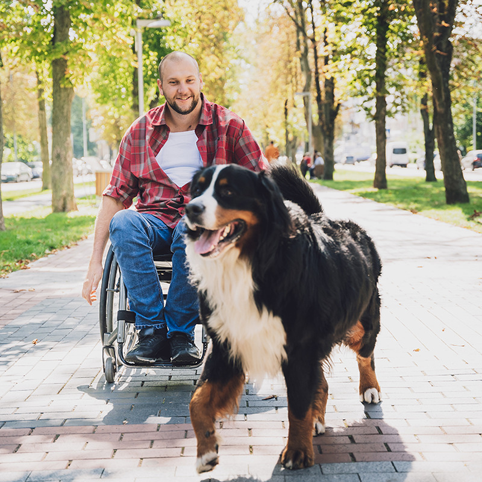

Our Mission
Twin Cities Animal Rescue rescues, rehabilitates, and rehomes dogs and cats throughout the metro area. We rely on adopters, foster families, volunteers, and donors to give every animal in our care a real shot at a permanent home.
Meet Our Animals

Dozens of dogs and cats are in our care right now, from playful puppies to calm, settled seniors, all waiting for a family of their own.
Pet Spotlight

Featured Rescue Story

Last spring, a litter of puppies found at a highway rest stop was fostered, vaccinated, and placed with local families within three weeks, thanks entirely to community volunteers and donors.
Our Impact
- 1,200+ animals rescued since our founding
- 480 animals placed in foster care last year
- 96% adoption success rate
How You Can Help
You can support our mission by adopting, fostering, volunteering, or making a donation. Visit our Services page to learn how to get involved, or reach out through our Contact page.